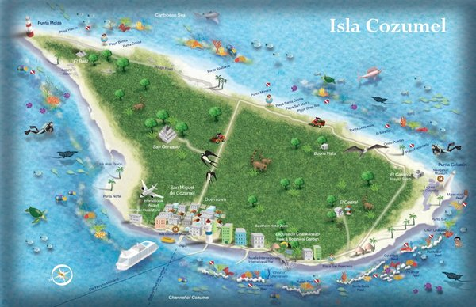

Tourist Attractions

What is there to do on Cozumel?
- Snorkeling
- Sea Trek Helmet Diving
- Glass Bottom boat Tours
- Visit Chankanaab Park
- Visit the several Mayan Ruins across the island
- Enjoy the beaches
- Visit and explore fantastic caves
- Visit the Museum of Cozumel
Cozumel Interesting Facts
- Translated to English Cozumel means "Island of the swallows"
- Cozumel has a population of 100,000
- Cozumel was first inhabited by the Maya who created many shrines to their Moon Goddess, the ruins
of which you can still visit
- Cozumel has a hidden underground river which you can visit on tours